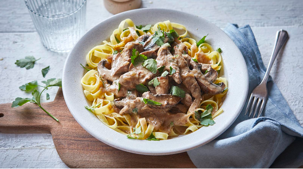

Beef Stroganoff

After browning the meat, this beef stroganoff can be left to tenderise in the slow cooker throughout the day ready for dinner time. Serve with rice or tagliatelle.
You can brown the meat the night before to make things easier in the morning.
Ingredients
- 2 tbsp sunflower oil
- 600g/1lb 5oz stewing or casserole steak, cut into chunky strips
- 3 tbsp plain flour
- 2 onions, sliced
- 3 garlic cloves, crushed
- 2 beef stock cubes, crumbled
- 1 tbsp Dijon mustard
- 1 tbsp Worcestershire sauce
- 25g/1oz butter
- 200g/7oz mushrooms, sliced
- 125ml/4fl oz soured cream
- handful flatleaf or curly parsley, roughly chopped (optional)
- salt and freshly ground black pepper
- freshly cooked rice or tagliatelle, to serve
Steps
- Brown the steak. (You can do this the night before or in the morning, if necessary). Heat 1 tablespoon of the oil in a large frying pan over a medium–high heat and fry the meat in two batches, using the remaining oil to fry the second batch. When the chunks are sealed and browned all over, place in a bowl and sprinkle over the flour. Stir through until the dustiness has disappeared. (If your slow cooker has a browning function, you can do this step in the slow cooker.)
- Pour 200ml/7fl oz water into the frying pan and bring to a fierce simmer, using a wooden spoon to scrape up all the meaty bits that are stuck to the bottom until the pan feels clean. Tip the meaty juices into a jug. Continue with the recipe if making straightaway or cool and then refrigerate the browned steak and jug of juices overnight if making the next day.
- Turn the slow cooker to the high setting. Layer in the onion, garlic and steak, adding any remaining flour or juices from the bowl. Add the stock cubes, mustard and Worcestershire sauce and season with some black pepper. Top up the reserved jug of meaty juices to 650ml/20fl oz using just boiled water. Pour all over the steak mixture, add the lid and cook on low for 7–8 hours until the meat is tender.
- Heat the butter in a frying pan over a high heat and fry the mushrooms until softened and golden. Stir into the stroganoff with the soured cream, turn the slow cooker to high and cook for another 15–25 minutes. Season with salt and pepper then stir through the parsley, if using, reserving a little to scatter over the top.
- Garnish the stroganoff with the reserved parsley and serve with rice or tagliatelle.
Return to top